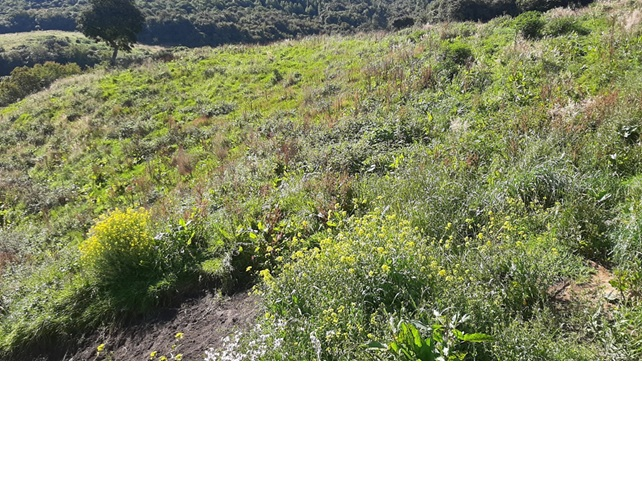
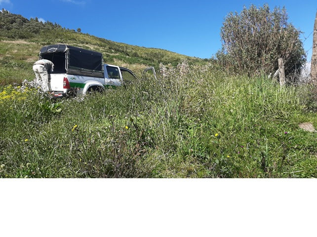
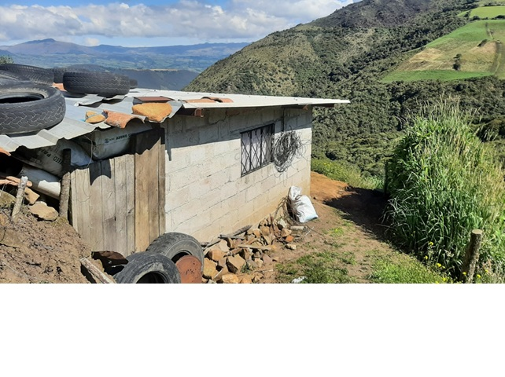
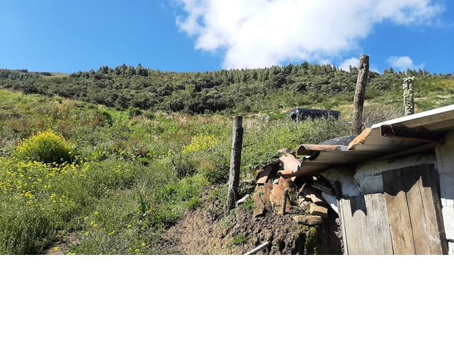
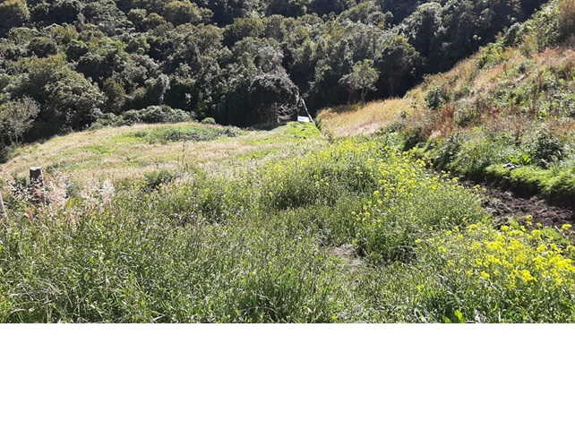
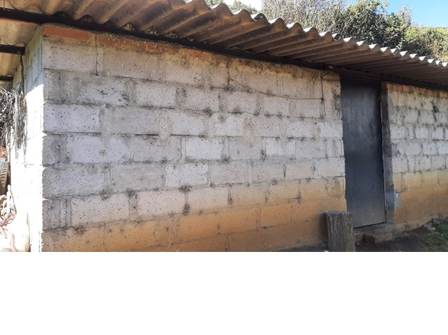

← volver al mapa
Terreno - EC-RJ-154926
EC-RJ-154926 · terreno · ESPEJO, Carchi






Datos del remate
| Avalúo pericial | $20,403 |
| Tipo de bien | terreno |
| Área de construcción | 24.00 m² |
| Área de terreno | 39.37 m² |
| Cantón / Provincia | ESPEJO, Carchi |
| Dirección / Sector | el paramo. sector rural, de la parroquia el ángel, cantón espejo, provincia del carchi, en el punto denominado “el páramo” |
| Señalamiento | Segundo Señalamiento |
| Fecha de remate | 2026-08-18 |
| No. de proceso | 04333202200927 |
Análisis vs. mercado
| Avalúo por m² | $518/m² |
| Mediana de mercado en la zona | $73/m² |
| Descuento vs. mercado | -607.7% |
| Comparables usados | 6 |
| Radio de búsqueda | 2000 m |
| Puntaje | 42/100 |
Descripción completa del avalúo
de acuerdo con el certificado del registro municipal de la propiedad y mercantil del cantón espejo número 647, se trata de un lote de terreno, perteneciente al sector rural, de la parroquia el ángel, cantón espejo, provincia del carchi, en el punto denominado “el páramo”el terreno es de forma irregular, topografía inclinada, y cuya área de acuerdo con el certificado del registro municipal de la propiedad y mercantil del cantón espejo número 647 es de: 39.366 m2., donde encontramos una construcción de una planta tipo mediagua.construcción:estructura autosoportante.paredes bloque.puertas metálica.ventanas hierro. cubierta madera – asbesto cemento.piso tierrapatio tierrainfraestructura:la propiedad dispone de los siguientes servicios básicos:a) red de agua potable• el estado de la construcción al momento de la inspección es regular.• la construcción no dispone de cerramiento.• el lindero sur está delimitado por alambre de púa y vegetación del sector.• el lindero norte está delimitado por quebrada.• los linderos este y oeste están delimitados por plantas de la zona y acequias• el terreno es apto para la agricultura y ganadería.• al momento de la inspección está cubierto por pasto natural y vegetación de la zona.• el camino para llegar a la propiedad es de difícil acceso vehicular.
el terreno es de forma irregular, topografía inclinada, y cuya área de acuerdo con el certificado del registro municipal de la propiedad y mercantil del cantón espejo número 647 es de: 39.366 m2., donde encontramos una construcción de una planta tipo mediagua. construcción: estructura autosoportante. paredes bloque. puertas metálica. ventanas hierro. cubierta madera – asbesto cemento. piso tierra patio tierra infraestructura: la propiedad dispone de los siguientes servicios básicos: a) red de agua potable • el estado de la construcción al momento de la inspección es regular. • la construcción no dispone de cerramiento. • el lindero sur está delimitado por alambre de púa y vegetación del sector. • el lindero norte está delimitado por quebrada. • los linderos este y oeste están delimitados por plantas de la zona y acequias • el terreno es apto para la agricultura y ganadería. • al momento de la inspección está cubierto por pasto natural y vegetación de la zona. • el camino para llegar a la propiedad es de difícil acceso vehicular.
sector rural, de la parroquia el ángel, cantón espejo, provincia del carchi, en el punto denominado “el páramo”
Límites: linderos longitud (m.) colindante norte 198.00 quebrada de atalquer. sur 126.00 lote señor neptalí montenegro. este 240.00 acequia de cunquer. oeste 246.00 acequia de pueblo nuevo.
Periodo de posturas: 18/08/2026 00:00:00 a 18/08/2026 23:59:59
Dependencia jurisdiccional: UNIDAD JUDICIAL CIVIL CON SEDE EN EL CANTÓN TULCÁN, PROVINCIA DE CARCHI
Análisis de inversión
⚠ Dudosa — revisar bienEl texto indica un área de 39,366 m² (no capturada) en zona de páramo; a ese tamaño el precio sería de apenas ~$0.52/m² — verificar, podría ser una buena oportunidad si el área es correcta.
A favor:
- Precio por m² aparentemente muy bajo si el área es correcta
En contra:
- Área no registrada en el sistema
- Zona de páramo, construcción regular
Análisis elaborado a partir de la descripción del avalúo — no es asesoría legal ni financiera.
Esta ficha es una copia de lo publicado en el sitio oficial de remates
judiciales de la Función Judicial del Ecuador, para consulta — no
reemplaza el expediente judicial. remates.funcionjudicial.gob.ec no da
un link propio por remate, por eso se generó esta página aparte.
Antes de ofertar, el expediente debe revisarlo un abogado.